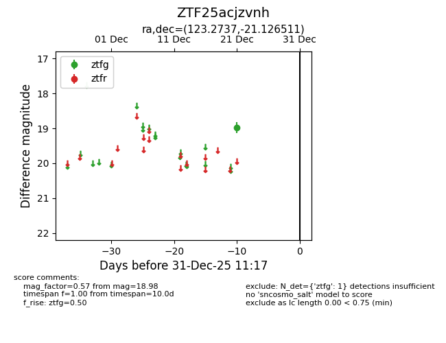
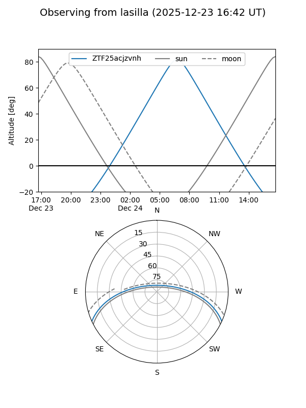
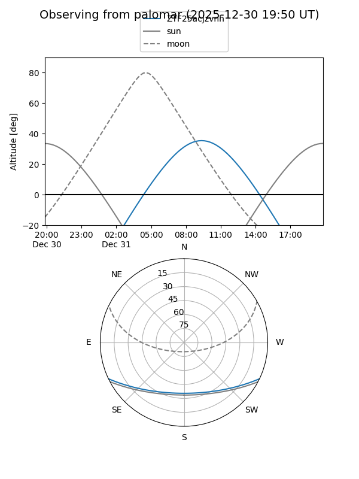

ZTF25acjzvnh
Target ZTF25acjzvnh at 2025-12-23 11:48
Aliases and brokers:
FINK: fink-portal.org/ZTF25acjzvnh
Lasair: lasair-ztf.lsst.ac.uk/objects/ZTF25acjzvnh
ALeRCE: alerce.online/object/ZTF25acjzvnh
alt names
ZTF25acjzvnh (ztf,fink_ztf)
Coordinates:
equatorial (ra, dec) = 123.2737,-21.12651
equatorial (HMS+DMS) = 08:13:05.70,-21:07:35.44
galactic (l, b) = (241.1519,+7.19334)
Flags:
Photometry:
last ztfg=18.98
1 ztfg detections
Lightcurve

Visibility


Additional plots